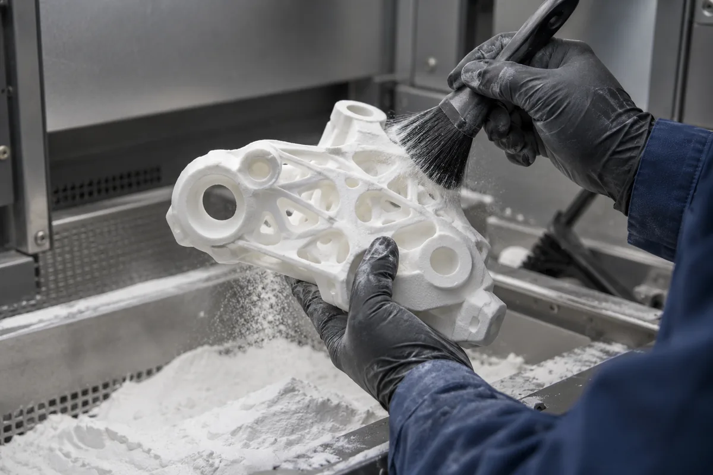

SLS Printing
Fuse nylon powder into complex shapes. Surrounding powder supports the part, opening up interlocking and internal geometry.

SLS Printing in practice.
How SLS works
A laser fuses selected regions of a polymer powder bed. Unfused powder supports surrounding geometry during the build and is removed after cooling.
Geometry with more freedom
Complex nylon housings, interlocking components and internal features can benefit from powder-bed printing. Trapped powder still needs a way out.
Understand the surface
As-printed nylon typically has a fine-grained texture. Clearances, wall thickness and powder removal affect the result; finishing availability is confirmed per project.
Make the next version
worth testing.
Fuse nylon powder into complex shapes. Surrounding powder supports the part, opening up interlocking and internal geometry.
Start with the intended use and the dimensions that matter. Review the model, agree the material and build orientation, then inspect the finished part against those requirements.
At a glance
- Process
- SLS
- Best applications
- Nylon housings, complex functional components
- Material options
- Nylon
- Finishes
- Raw, sanded or painted where compatible
Final process, finish and availability are confirmed during review.
Materials for this service.
Choose the material grade around load, temperature, flexibility and finish. Availability is confirmed during review.
Better parts start with better decisions.
Geometry & orientation
Wall thickness, unsupported spans and layer direction influence the result. Highlight load paths and thin features in your brief.
Accuracy & fit
There is no universal tolerance across all parts. Share critical dimensions, clearance needs and mating components before manufacturing.
Surface & finishing
Support contact, layer lines and powder texture vary by process. Agree the surfaces that matter and any extra finishing before quoting.
Applications for this service.


Functional Prototypes
Check fit, form and function before your next design decision.
Explore applicationYour next part, in six steps.
Upload CAD
Share a model and your requirements.
Choose material
Match the process to the purpose.
Review quote
Agree the details before production.
Manufacture
Print, clean and finish your parts.
Quality check
Inspect against agreed requirements.
Receive parts
Ready for your next iteration.
Before you print.
Which file formats can I use?
Use STL, OBJ, STEP or 3MF. Include units and any critical dimensions. If you only have an idea or drawing, start with design consultation.
Which technology should I choose?
FDM is a practical starting point for thermoplastic prototypes. SLA suits smooth, detailed visual models. SLS suits complex nylon geometry. The best choice depends on how the part will be used.
What determines the final price?
Geometry, material, machine time, supports, finishing and quantity all affect cost. The estimator is illustrative; a manufacturing review is needed for an accurate quote.
How accurate will my part be?
Accuracy varies with process, material, size and orientation. Mark critical dimensions and fits in your drawing so they can be reviewed before manufacturing.
Related services.
Functional Prototypes
Validate fit and mechanical behaviour with material and orientation selected for the test you need to run.
Explore serviceCustom Mechanical Parts
Manufacture brackets, gears, fixtures and replacement housings around your exact geometry.
Explore serviceLow-Volume Manufacturing
Produce repeatable batches without committing to traditional tooling. Review a first article before the full run.
Explore serviceReady to turn your design
into a physical part?
From a single prototype to your next production run.